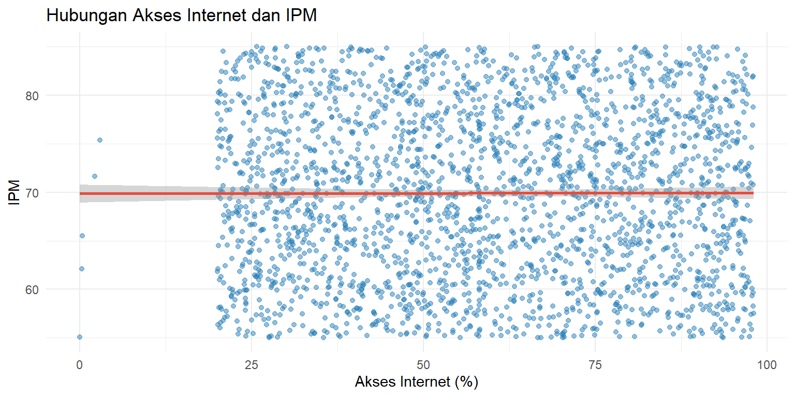
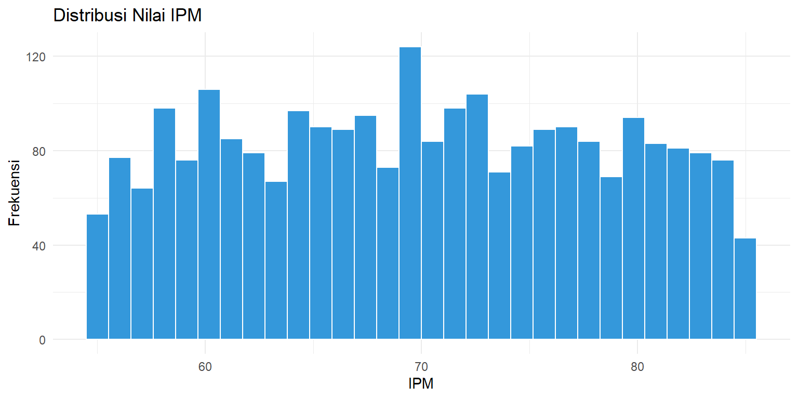

Pengaruh Penetrasi Akses Internet terhadap Indeks Pembangunan Manusia (IPM): Pendekatan Probabilitas dan Analisis Korelasi
Penulis
Alfitra Mumtaz Hanafi (J0403251058)
Ahmad Abian Hakim (J0403251069)
Rheika Muhammad Dzikrulhakim (J0403251068)
Zaky Alnadif (J0403251126)
Natasha Umaiza (J0403251046)
Hilannisa Nuraini Al’Basr (J0403251022)
Diterbitkan
7 Juni 2026
BAB I: PENDAHULUAN
Latar Belakang
Dalam era modern, definisi infrastruktur pembangunan tidak lagi terbatas pada pembangunan fisik, melainkan telah berekspansi ke infrastruktur digital. Akses internet kini menjadi kebutuhan fundamental yang bertindak sebagai katalisator perputaran ekonomi, pemerataan pendidikan, dan akses informasi medis. Kesenjangan digital (digital divide) sering kali menjadi akar masalah ketimpangan kesejahteraan antarwilayah. Wilayah dengan penetrasi internet yang rendah cenderung mengalami stagnasi dalam peningkatan kualitas Sumber Daya Manusia (SDM). Oleh karena itu, penelitian ini bertujuan untuk mengevaluasi secara statistik probabilitas dan signifikansi korelasi ketersediaan akses internet terhadap Indeks Pembangunan Manusia (IPM) menggunakan bahasa pemrograman R.
Tujuan Analisis
Analisis ini memiliki tujuan antara lain:
Mengidentifikasi dan menangani missing value serta outlier pada dataset pembangunan wilayah, khususnya pada variabel akses internet dan IPM.
Melakukan statistika deskriptif untuk memetakan persebaran data digitalisasi dan kesejahteraan penduduk.
Membangun visualisasi data yang informatif untuk melihat tren sebaran antarvariabel secara grafis.
Menguji distribusi probabilitas (normalitas) pada data IPM wilayah.
Membuktikan secara statistik hipotesis korelasi antara penetrasi akses internet dengan skor IPM.
BAB II: METODOLOGI
Dataset
Penelitian ini menggunakan dataset pembangunan_wilayah_missing_outlier.csv yang merepresentasikan kondisi indikator pembangunan makro di berbagai wilayah. Fokus pengujian dibatasi pada variabel independen akses_internet (persentase ketersediaan fasilitas internet) dan variabel dependen ipm (Indeks Pembangunan Manusia). Dataset ini secara inheren memiliki missing value dan outlier yang disimulasikan untuk menguji ketahanan model pra-pemrosesan data sebelum uji hipotesis dieksekusi.
Tools yang Digunakan
Seluruh tahapan pembersihan dan pengujian data dieksekusi menggunakan bahasa pemrograman R. Dokumen ini disusun menggunakan Quarto, sebuah sistem penerbitan saintifik yang memungkinkan integrasi narasi teks dan eksekusi kode (reproducible research) secara instan ke dalam format PDF. Pustaka tambahan seperti ggplot2 diimplementasikan untuk membangun visualisasi grafis yang komprehensif.
Metode Analisis
Pendekatan statistik yang diterapkan meliputi:
Penanganan Data: Imputasi data kosong diselesaikan menggunakan Median Imputation untuk meminimalisasi efek distorsi akibat nilai ekstrem. Karena fokus penelitian adalah menguji hubungan antara akses internet dan IPM, analisis selanjutnya dilakukan menggunakan data hasil imputasi tanpa menghapus observasi yang terindikasi sebagai nilai ekstrem.
BAB III. HASIL DAN PEMBAHASAN
3.1 Gambaran Umum Analisis
Penelitian ini bertujuan untuk mengkaji hubungan antara tingkat penetrasi akses internet dengan Indeks Pembangunan Manusia (IPM). Untuk memperoleh hasil yang valid, analisis dilakukan melalui beberapa tahapan, yaitu pembersihan data, analisis deskriptif, visualisasi hubungan antarvariabel, pengujian asumsi normalitas, dan pengujian korelasi.
Tahap pembersihan data dilakukan terlebih dahulu karena dataset mengandung missing value yang berpotensi memengaruhi hasil analisis statistik. Setelah data dinyatakan bersih, dilakukan eksplorasi data untuk memperoleh gambaran umum karakteristik variabel yang diteliti. Selanjutnya, dilakukan pengujian statistik guna mengetahui apakah terdapat hubungan yang signifikan antara akses internet dan IPM.
3.2 Pembersihan Data dan Penanganan Missing Value
Sebelum melakukan analisis lebih lanjut, diperlukan pemeriksaan kualitas data untuk memastikan tidak terdapat nilai yang hilang (missing value) pada variabel penelitian. Nilai yang hilang dapat menyebabkan bias dalam perhitungan statistik sehingga perlu ditangani terlebih dahulu.
Pada penelitian ini digunakan metode Median Imputation, yaitu menggantikan nilai yang hilang dengan nilai median dari variabel yang bersangkutan. Metode ini dipilih karena median relatif lebih tahan terhadap pengaruh nilai ekstrem dibandingkan rata-rata (mean).
Kode
# Membuat folder gambar jika folder tersebut belum tersediaif (!dir.exists("../gambar")) {dir.create("../gambar")}# Membaca datasetdata <-read.csv("../dataset/pembangunan_wilayah_missing_outlier.csv")# Menghitung jumlah missing valuena_internet_awal <-sum(is.na(data$akses_internet))na_ipm_awal <-sum(is.na(data$ipm))cat("Jumlah NA Akses Internet sebelum diolah:", na_internet_awal, "\n")
Jumlah NA Akses Internet sebelum diolah: 25
Kode
cat("Jumlah NA IPM sebelum diolah:", na_ipm_awal, "\n")
Jumlah NA IPM sebelum diolah: 25
Kode
# Median Imputationdata$akses_internet[is.na(data$akses_internet)] <-median(data$akses_internet, na.rm =TRUE)data$ipm[is.na(data$ipm)] <-median(data$ipm, na.rm =TRUE)
Berdasarkan hasil pemeriksaan, ditemukan sejumlah data yang tidak memiliki nilai pada variabel akses internet maupun IPM. Seluruh nilai yang hilang kemudian digantikan menggunakan median masing-masing variabel sehingga dataset menjadi lengkap dan siap digunakan untuk tahap analisis berikutnya.
3.3 Analisis Deskriptif
Setelah proses pembersihan data selesai, dilakukan analisis deskriptif untuk memperoleh gambaran umum mengenai karakteristik data. Analisis ini bertujuan mengetahui ukuran pemusatan dan penyebaran data seperti nilai minimum, maksimum, median, rata-rata, dan kuartil.
Kode
cat("Ringkasan Statistik Akses Internet:\n")
Ringkasan Statistik Akses Internet:
Kode
summary(data$akses_internet)
Min. 1st Qu. Median Mean 3rd Qu. Max.
0.01 39.09 58.09 58.78 78.58 97.99
Kode
cat("\nRingkasan Statistik IPM:\n")
Ringkasan Statistik IPM:
Kode
summary(data$ipm)
Min. 1st Qu. Median Mean 3rd Qu. Max.
55.01 62.60 69.89 69.90 77.09 84.99
Hasil statistik deskriptif menunjukkan sebaran nilai akses internet dan IPM pada seluruh wilayah yang diamati. Informasi ini memberikan gambaran awal mengenai kondisi data sebelum dilakukan analisis hubungan antarvariabel. Selain itu, statistik deskriptif juga membantu mengidentifikasi adanya ketimpangan atau variasi yang cukup besar antarwilayah.
3.4 Visualisasi Hubungan Akses Internet dan IPM
Untuk memperoleh gambaran yang lebih intuitif mengenai hubungan kedua variabel, dilakukan visualisasi menggunakan scatter plot. Visualisasi ini memungkinkan pengamatan pola hubungan secara langsung melalui persebaran titik data.
Kode
# Memanggil package ggplot2 untuk membuat visualisasi datalibrary(ggplot2)# Membuat scatter plot hubungan akses internet dan IPMplot_scatter <-ggplot(data, aes(x = akses_internet, y = ipm)) +geom_point(color ="#2980b9", alpha =0.5) +geom_smooth(method ="lm", color ="#e74c3c", se =TRUE) +labs(title ="Hubungan Akses Internet dan IPM",x ="Akses Internet (%)",y ="IPM" ) +theme_minimal()# Menampilkan plot pada laporanplot_scatter
`geom_smooth()` using formula = 'y ~ x'

Kode
# Menyimpan plot ke dalam folder gambarggsave(filename ="../gambar/scatter_akses_internet_ipm.png",plot = plot_scatter,width =8,height =4,dpi =300)
`geom_smooth()` using formula = 'y ~ x'
Gambar di atas menunjukkan persebaran nilai IPM terhadap tingkat akses internet pada seluruh wilayah yang diamati. Berdasarkan persebaran titik-titik data, tidak terlihat pola linear yang kuat antara kedua variabel. Titik-titik cenderung menyebar secara acak dan garis regresi memiliki kemiringan yang sangat kecil. Temuan awal ini mengindikasikan bahwa hubungan antara akses internet dan IPM kemungkinan lemah, sehingga perlu dibuktikan lebih lanjut melalui pengujian statistik menggunakan uji korelasi Pearson.
3.4.2 Histogram Distribusi IPM
Histogram digunakan untuk melihat bentuk distribusi nilai IPM pada dataset. Visualisasi ini membantu memberikan gambaran awal mengenai apakah data IPM cenderung menyebar secara normal atau tidak sebelum dilakukan uji normalitas.
Kode
# Membuat histogram untuk melihat distribusi nilai IPMplot_histogram_ipm <-ggplot(data, aes(x = ipm)) +geom_histogram(bins =30, fill ="#3498db", color ="white") +labs(title ="Distribusi Nilai IPM",x ="IPM",y ="Frekuensi" ) +theme_minimal()# Menampilkan histogram IPM pada laporanplot_histogram_ipm

Kode
# Menyimpan histogram IPM ke dalam folder gambarggsave(filename ="../gambar/histogram_ipm.png",plot = plot_histogram_ipm,width =8,height =4,dpi =300)
Berdasarkan Gambar 2, nilai IPM terlihat tersebar pada beberapa rentang tertentu. Histogram ini memberikan gambaran mengenai pola distribusi data IPM sebelum dilakukan pengujian normalitas. Apabila bentuk histogram tidak menyerupai pola lonceng yang simetris, maka terdapat kemungkinan bahwa data IPM tidak berdistribusi normal. Oleh karena itu, hasil visualisasi ini perlu diperkuat dengan uji normalitas Shapiro-Wilk pada bagian berikutnya.
3.5 Uji Normalitas
Sebelum melakukan uji korelasi Pearson, perlu dipastikan bahwa data memenuhi asumsi normalitas. Oleh karena itu, dilakukan Uji Shapiro-Wilk pada variabel IPM.
Shapiro-Wilk normality test
data: data$ipm
W = 0.96032, p-value < 2.2e-16
Pada pengujian ini digunakan hipotesis sebagai berikut:
H₀ : Data berdistribusi normal.
H₁ : Data tidak berdistribusi normal.
Berdasarkan hasil pengujian diperoleh nilai p-value < 0,05 sehingga H₀ ditolak. Dengan demikian, data IPM tidak berdistribusi normal.
Namun demikian, penelitian ini tetap menggunakan uji korelasi Pearson karena jumlah sampel yang digunakan sangat besar (sekitar 2.500 observasi). Pada ukuran sampel yang besar, penyimpangan kecil dari distribusi normal sering kali menyebabkan hasil uji Shapiro-Wilk menjadi signifikan. Oleh karena itu, uji Pearson masih digunakan untuk mengevaluasi kecenderungan hubungan linear antara kedua variabel.
3.6 Uji Korelasi Pearson
Tahap terakhir adalah menguji hubungan antara penetrasi akses internet dan IPM menggunakan Uji Korelasi Pearson. Pengujian ini dilakukan untuk mengetahui apakah terdapat hubungan yang signifikan antara kedua variabel serta mengukur kekuatan hubungan tersebut.
Pearson's product-moment correlation
data: data$akses_internet and data$ipm
t = 0.10552, df = 2498, p-value = 0.916
alternative hypothesis: true correlation is not equal to 0
95 percent confidence interval:
-0.03709453 0.04131056
sample estimates:
cor
0.002111257
Hipotesis yang digunakan adalah:
H₀ : Tidak terdapat hubungan yang signifikan antara akses internet dan IPM.
H₁ : Terdapat hubungan yang signifikan antara akses internet dan IPM.
Berdasarkan hasil pengujian diperoleh nilai koefisien korelasi (r) sebesar 0,0021 dengan p-value sebesar 0,916.
Nilai koefisien korelasi yang sangat mendekati nol menunjukkan bahwa hubungan linear antara akses internet dan IPM hampir tidak ada. Selain itu, nilai p-value yang jauh lebih besar dari 0,05 menunjukkan bahwa hubungan tersebut tidak signifikan secara statistik.
Dengan demikian, H₀ tidak ditolak sehingga tidak terdapat bukti yang cukup untuk menyatakan adanya hubungan yang signifikan antara tingkat akses internet dan IPM pada dataset yang dianalisis.
Hasil ini menunjukkan bahwa variasi IPM pada wilayah yang diamati kemungkinan dipengaruhi oleh faktor-faktor lain di luar akses internet, seperti tingkat pendidikan, pendapatan masyarakat, kualitas layanan kesehatan, atau variabel pembangunan lainnya.
3.7 Ringkasan Hasil Analisis
Berdasarkan seluruh tahapan analisis yang telah dilakukan, diperoleh beberapa temuan utama sebagai berikut:
Ditemukan data yang hilang (missing value) pada variabel akses internet dan IPM yang kemudian berhasil ditangani menggunakan metode Median Imputation.
Analisis deskriptif menunjukkan adanya variasi nilai akses internet dan IPM antarwilayah yang diamati.
Visualisasi scatter plot tidak menunjukkan pola hubungan linear yang kuat antara akses internet dan IPM.
Hasil Uji Shapiro-Wilk menunjukkan bahwa data IPM tidak berdistribusi normal (p-value < 0,05).
Hasil Uji Korelasi Pearson menghasilkan koefisien korelasi sebesar 0,0021 dengan p-value sebesar 0,916, sehingga tidak ditemukan hubungan yang signifikan antara akses internet dan IPM pada dataset yang dianalisis.
Secara keseluruhan, penelitian ini menunjukkan bahwa tingkat akses internet tidak memiliki hubungan linear yang signifikan dengan Indeks Pembangunan Manusia pada data yang digunakan dalam penelitian.